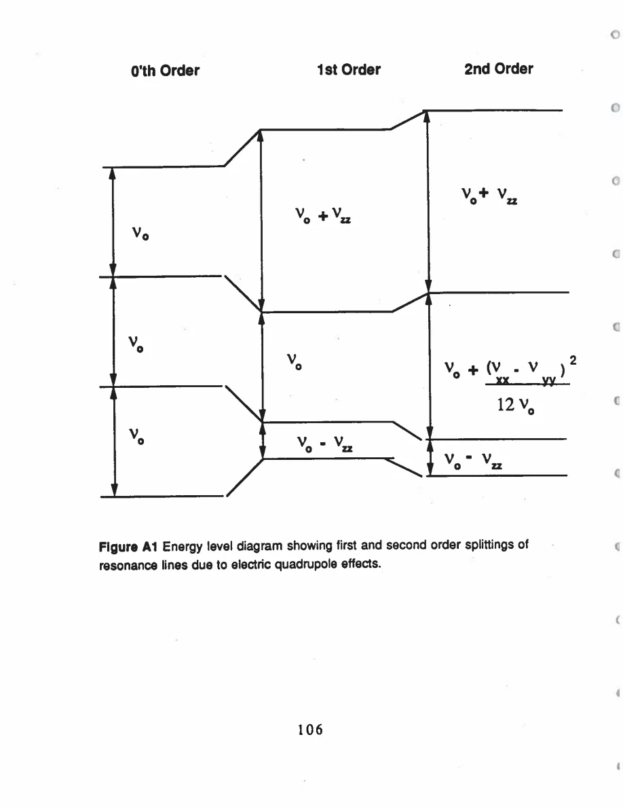

Pennington · supplied source 1989 · chapter unit
2. Four tensors, four questions
A magnetic shift, an EFG, a recovery rate and echo decay describe different parts of the electronic environment.
The question: What information comes from a line position, recovery and echo envelope?
Before you start: the terms you need
- Plane Cu / chain Cu: the two crystallographic copper sites in YBCO
- EFG: electric field gradient, which couples to a nuclear quadrupole moment
- Magnetic shift: the field-proportional frequency change after quadrupole contributions are separated
- W₁: the thesis’s elementary satellite population-transition rate, not automatically 1/T₁
- Redfield contribution: echo decay generated by the fluctuating fields also responsible for population recovery
- Transferred hyperfine coupling: a nuclear spin senses electronic spins through orbital mixing or intervening atoms
See → explain → check
Follow the idea in 2 pictures.
Picture 1 / 2
Two static channels
Look for: Keep electric and magnetic contributions separate.
Swipe across the picture to read every label, or enlarge it below.
- EFG tensor
- Magnetic-shift tensor
The central line can also have a second-order quadrupole correction.
Multiple transitions let the EFG and magnetic shift be fitted together.
Picture 2 / 2
Two time-domain channels
Look for: Compare what relaxes in each measurement.
Swipe across the picture to read every label, or enlarge it below.
- Population recovery
- Spin echo
Conceptual comparison; neither panel is a fit to source data.
Populations and coherence have different rate laws.
Explain it back.
Try answering aloud before opening the explanation.
Can two recovery exponentials automatically be called two electronic populations?
No. A single spin 3/2 environment can have multiple population-relaxation modes after selective excitation.
What does Knight shift mean in this thesis?
The conduction-electron spin contribution; the author separates local-Cu spin and orbital shifts.
Go deeper Follow the full argument
The static line contains two interactions
Copper’s two naturally abundant isotopes,⁶³Cu and⁶⁵Cu, both have nuclear spin 3/2. The external field splits the nuclear levels through the Zeeman interaction. A nonspherical electric charge distribution also creates an EFG that couples to the nuclear quadrupole moment. The observed transition frequencies therefore contain magnetic and electric effects simultaneously. The thesis uses several transitions and directions to separate a magnetic shift tensor from an EFG tensor; it does not identify the full central-transition frequency change with an electronic spin susceptibility. The EFG itself includes a local 3d-hole term and a lattice-ion term, with the latter enhanced through polarization of core orbitals. Its interpretation is therefore a model of charge and orbitals, whereas the directly fitted tensor is the closer experimental result.
A magnetic shift can contain several channels
The orbital or chemical shift results from field-induced mixing of orbital states that were initially quenched. A spin shift instead follows electronic spin polarization. Pennington deliberately reserves the phrase Knight shift for conduction-electron susceptibility, while discussing the local-Cu-moment spin shift separately. This terminology is narrower than some common usage and than the author’s earlier papers. Oxygen-related band states can transfer a contact interaction to the Cu nucleus through Cu 4s admixture; the thesis calls that transferred hyperfine couplingI. A different transferred coupling,II, allows neighboring Cu local spins to influence the nucleus through an intervening oxygen. These channels can produce different signs and anisotropies, so a nearly zero net spin shift need not mean every spin contribution is zero. The guide keeps the labels tied to their mechanisms instead of combining them under one ambiguous name.
Recovery and coherence are distinct
Population recovery describes how nonequilibrium nuclear level occupations approach equilibrium. For a quadrupole-split spin 3/2 system, selective inversion excites several relaxation modes; a curve can have two or three exponential components even in a homogeneous electronic environment. The thesis parameterizes the process with W₁ rather than giving every curve one fitted T₁. Echo decay describes loss of transverse coherence. Its exponential baseline can be calculated from the same fluctuating magnetic fields through Redfield theory, but additional nuclear couplings can generate exponential or Gaussian decay. The separate observables answer different questions: a shift probes time-averaged electronic polarization, W₁ samples suitable fluctuating-field spectral weight, and the echo can test additional interactions between nuclei. None of these alone is a complete fingerprint of an electronic state.
Translate the mathematics Essential equations and their meaning
K_h = B_h χ_h
Symbols: K_h: oxygen-hole Knight shift; B_h: transferred contact coupling; χ_h: hole-band spin susceptibility
This is the source’s conduction-hole channel, not the whole magnetic shift.
Read the evidence Guided original source pages

PDF p. 118
What the evidence supports—and where it stops
- Names and rate conventions are source-specific.
- The fitted EFG is distinct from the subsequent atomic-charge interpretation.
Source version, reading coverage and preservation
All 146 scanned pages rendered and locally OCR-recognized with Windows.Media.Ocr. Research prose of PDF 13–139 read in full; source-specific formulas and selected complete page figures inspected individually. PDFpage=printedpage+12.
Reviewed body pages: 13, 14, 15, 16, 17, 18, 19, 20, 21, 22, 23, 24, 25, 26, 27, 28, 29, 30, 31, 32, 33, 34, 35, 36, 37, 38, 39, 40, 41, 42, 43, 44, 45, 46, 47, 48, 49, 50, 51, 52, 53, 54, 55, 56, 57, 58, 59, 60, 61, 62, 63, 64, 65, 66, 67, 68, 69, 70, 71, 72, 73, 74, 75, 76, 77, 78, 79, 80, 81, 82, 83, 84, 85, 86, 87, 88, 89, 90, 91, 92, 93, 94, 95, 96, 97, 98, 99, 100, 101, 102, 103, 104, 105, 106, 107, 108, 109, 110, 111, 112, 113, 114, 115, 116, 117, 118, 119, 120, 121, 122, 123, 124, 125, 126, 127, 128, 129, 130, 131, 132, 133, 134, 135, 136, 137, 138, 139. Acknowledgments and biography are not teaching material. Bibliography not independently verified against external publications. Mathematical derivations are summarized at final-result level; not every algebraic line independently reconstructed.
Source SHA-256: 85b6d3c8d20ccc23476bf72473860248d5228e16892afefa8dec6c7054d43c26. Original file bytes preserved locally, and in this room’s original download.
Thesis - Pennington - 1989 - Single crystal NMR of high temperature superconductors.pdf